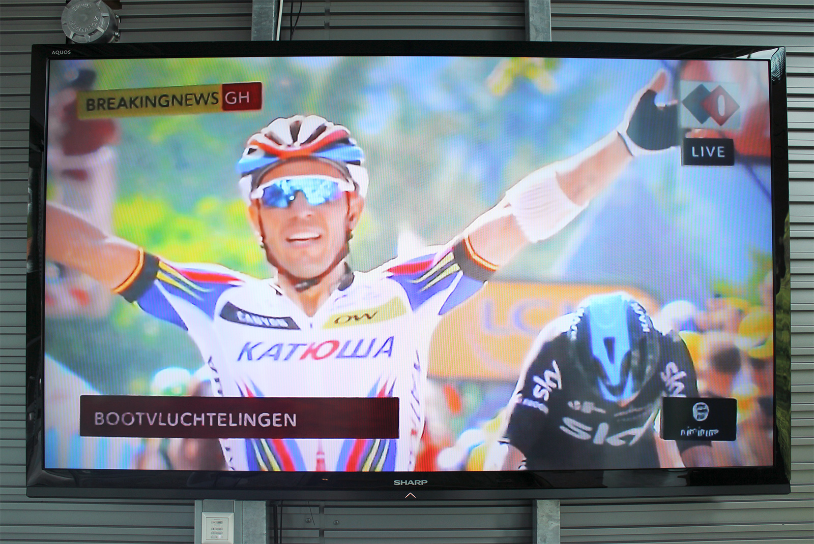
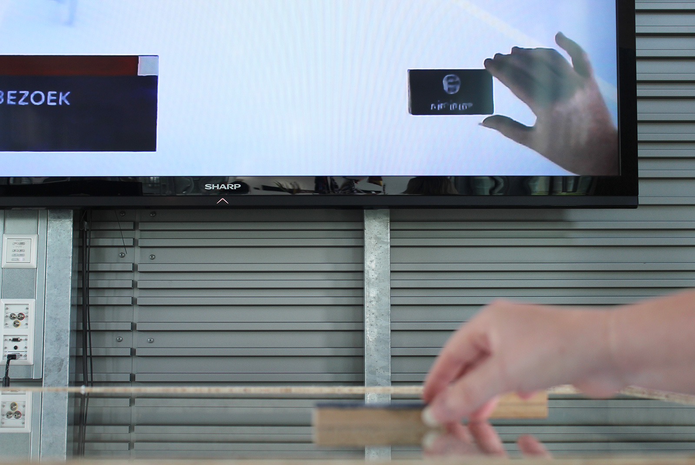
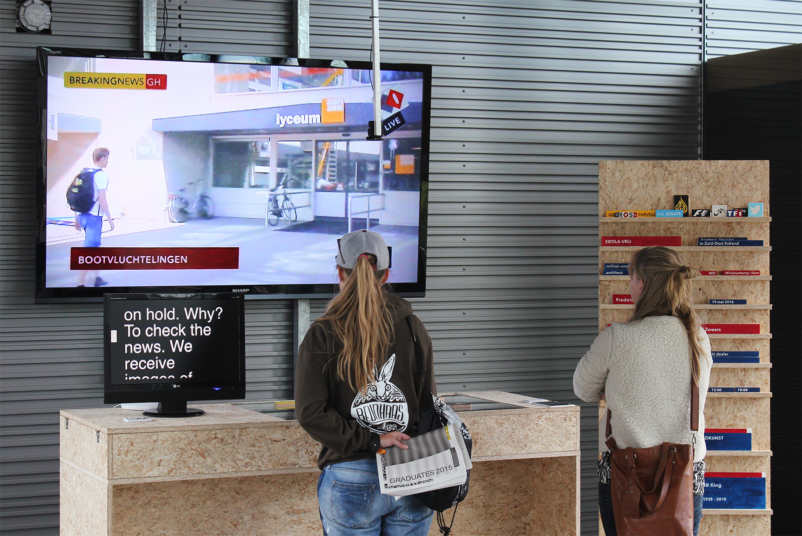
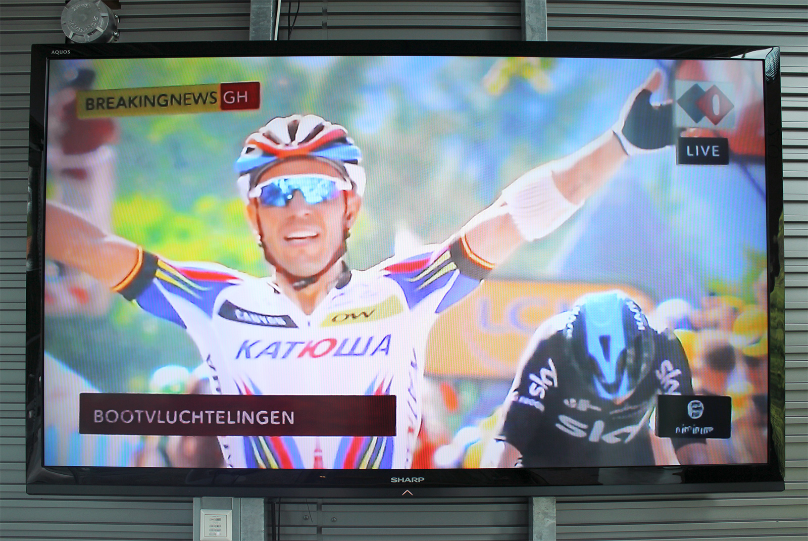
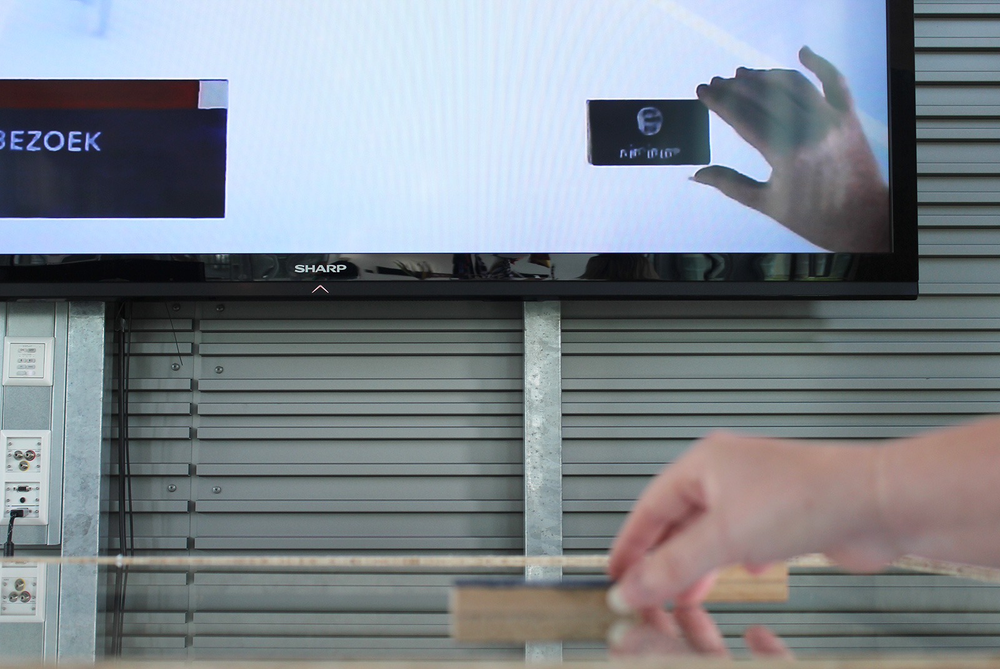
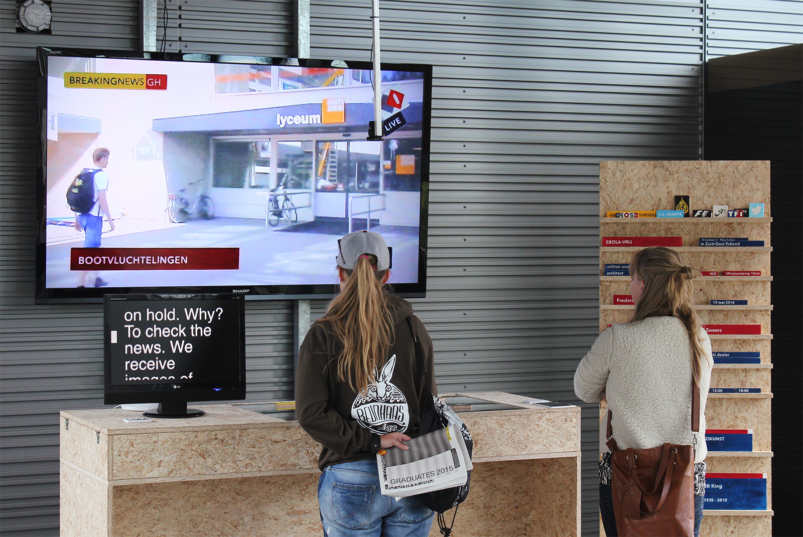

\/\/\/\

 





Based on a true story
An installation which part is of the graduation show while you were sleeping, between the 4th and 9th of July 2015, Royal Academy of Art, The Hague.
Info
Every ten minutes, we set our lives on hold. Why? To check the news. We receive images of important achievements, disasters, crimes, and epidemics. Images of what we think the world looks like. We consume those images of news-media and we see them as trustworthy and objective. But what if we shift with those images? What kind of elements are used before an image reveals what it should or should not say? What kind of effect do the graphic elements such as logos and banners have on these images? And the way that we perceive them altogether?
In the project “Based on a true story”, news imagery is deconstructed and reconstructed. By separating the graphical elements from the underlying images and manipulating or replacing them, I aim to show the real power of those graphical elements. Graphical elements which persuade us daily.